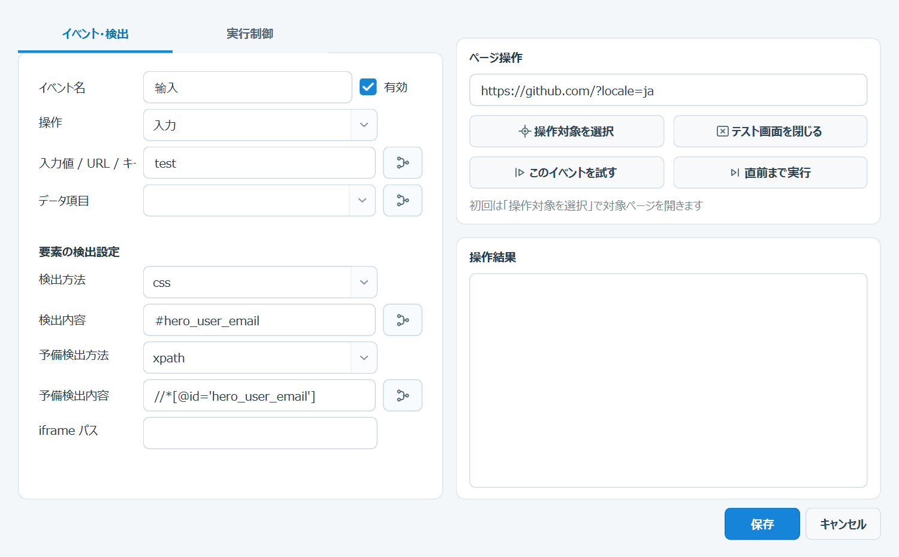
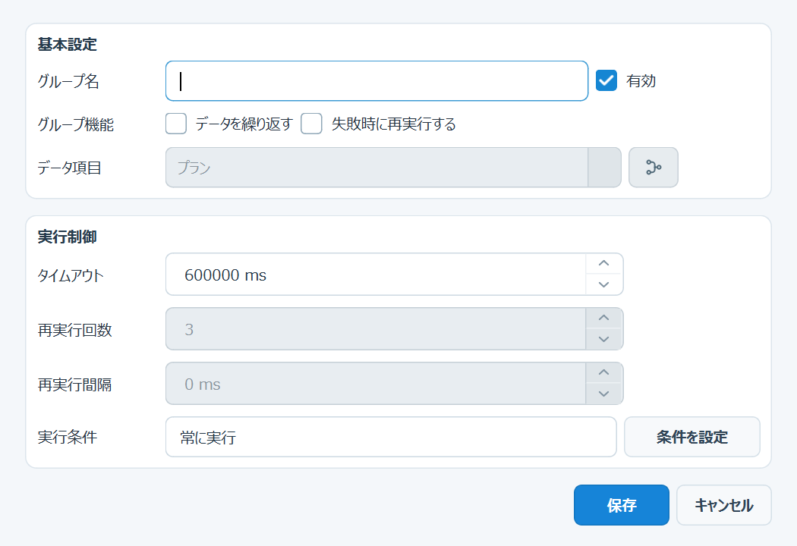

ブラウザーで行う一つの操作を登録します。選択した「操作」に応じて、使用できる欄が変わります。

| 画面上の表示 | 操作内容 |
|---|---|
ファイルを選択 | 「操作」で「ファイル送信」を選ぶと、「入力値 / URL / キー」欄の右端に表示されます。送信する固定ファイルを選びます。 |
データ参照 | 「入力値 / URL / キー」「検出内容」「予備検出内容」「移動先 URL」の各入力欄の右端にあります。カーソル位置へ ${data:項目パス} を挿入し、固定文字とデータ値を一つの欄で組み合わせます。 |
| 左側の「実行制御」タブにある「実行条件」欄の右端にあります。このイベントを実行する条件を設定します。 | |
| 「イベント・検出」タブでは操作対象を設定します。「実行制御」タブで要素による成功確認を選ぶと、表示が「成功確認対象を選択」に変わり、成功確認側の検出内容を設定します。 | |
| 画面右上の「ページ操作」にあり、要素選択・テスト用 Chrome を閉じます。 | |
| 通常は編集中のイベントを現在ページ上で実行します。「実行制御」タブで要素による成功確認を設定している間は、イベントを実行せず、成功確認対象をブラウザー上で強調表示します。 | |
| 画面右上の「ページ操作」にあり、先行イベントを実行して対象イベントの直前で停止します。 | |
データ構造から選択 | 左側「イベント設定」の「データ項目」欄の右端にあります。入力値または取得値を実行データの項目と結び付けます。同じ図柄の「データ参照」とは、配置されている欄で区別します。 |
すべて展開／折りたたむ | 「データ構造から選択」画面で、配下を持つデータ項目を一括して展開または折りたたみます。＋は「すべて展開」、－は「すべて折りたたむ」を表し、次に実行される操作のアイコンが表示されます。 |
| 設定を確定して閉じる／変更を保存せず閉じる操作です。 |
「操作」を変更すると、不要な欄は自動的に非表示になり、同じ位置の入力欄やボタンが別の意味へ切り替わる場合があります。次の表で、画面に表示される項目を確認してください。
| 操作 | 「イベント・検出」タブに表示される主な項目 | 右側ボタンと注意 |
|---|---|---|
| 未選択 | イベント名と操作だけを入力します。 | は使用できます。選んだ要素から「操作」が自動提案されます。 は使用できません。 |
| ページへ移動 | 「入力値 / URL / キー」に移動先 URL を入力します。要素の検出設定と「データ項目」は表示されません。 | 通常の「操作対象を選択」は使用できません。入力欄右端の は、URL の一部へデータ参照を挿入します。 |
| クリック | 要素の検出設定を使用します。「入力値 / URL / キー」と「データ項目」は表示されません。 | 「操作対象を選択」でクリック対象を登録します。 |
| 入力 | 要素の検出設定、「入力値 / URL / キー」、「データ項目」を使用します。 | 入力欄右端の は文字列の一部への挿入、「データ項目」右端の同じ図柄は入力値全体とのリンクです。 |
| 選択 | 要素の検出設定、「入力値 / URL / キー」、「データ項目」を使用します。 | 固定値を使う場合は option の value、実行データを使う場合は「データ項目」を設定します。「入力値 / URL / キー」右端には追加ボタンを表示しません。 |
| 待機 | 要素の検出設定を使用し、「入力値 / URL / キー」の代わりに「表示／非表示／操作可能」の待機条件が表示されます。 | 「操作対象を選択」で待機対象を登録します。固定時間の待機には「一時停止」を使用します。 |
| キー入力 | 要素の検出設定と「入力値 / URL / キー」を使用します。「データ項目」は表示されません。 | 入力欄右端の から、キー文字列の一部へデータ参照を挿入できます。 |
| 文字取得 | 要素の検出設定、「入力値 / URL / キー」、「データ項目」を使用します。 | 「入力値 / URL / キー」は後続イベントで使う変数名、「データ項目」は取得結果の保存先です。どちらか一方を設定します。 |
| スクリーンショット | 「入力値 / URL / キー」にファイル名を入力します。要素の検出設定と「データ項目」は表示されません。 | 「操作対象を選択」は使用できません。入力欄右端の でファイル名へデータ参照を挿入できます。 |
| 一時停止 | 「入力値 / URL / キー」に待機時間（ms）を入力します。要素の検出設定と「データ項目」は表示されません。 | 「操作対象を選択」は使用できません。値を空欄にした場合は「タイムアウト」の値を待機時間として使用します。 |
| ファイル送信 | 要素の検出設定、「入力値 / URL / キー」、「データ項目」を使用します。 | 入力欄右端の は固定ファイルの選択、「データ項目」右端の同じ図柄はファイルパスとのリンクです。 |
| 現在の状態 | 対象選択ボタン | 「このイベントを試す」の動作 |
|---|---|---|
| 「イベント・検出」タブ | 操作に使用する要素を登録します。 | 編集中のイベントを現在ページ上で実行します。 |
| 「実行制御」タブ＋成功確認「確認しない」 | 操作本体の対象選択のままです。対象要素を使用しない操作では無効になります。 | 編集中のイベントを現在ページ上で実行します。 |
| 「実行制御」タブ＋「URL に文字列を含む」 | 要素を選ばないため、成功確認用の対象選択には切り替わりません。 | 編集中のイベントを現在ページ上で実行します。 |
| 「実行制御」タブ＋要素による成功確認 | 成功判定に使用する別の要素を登録します。 | イベントは実行せず、成功確認対象をブラウザー上で強調表示します。 |
「操作」を選ぶと、その操作で必要な入力欄だけが有効になります。画面は「イベント・検出」「実行制御」のタブに分かれています。対象要素を操作するイベントでは、 で対象を設定します。
| 操作 | 設定する項目 | 入力例 | 動作と登録時の注意 |
|---|---|---|---|
| ページへ移動 | 入力値 / URL / キー、タイムアウト | https://example.com/login | 指定 URL を開きます。対象要素と検出方法は設定しません。 |
| クリック | 検出方法、検出内容、タイムアウト | role ／ button|ログイン | ボタン、リンク、チェックボックスなどをクリックします。 |
| 入力 | 検出方法、検出内容、入力値 / URL / キー、タイムアウト | label ／ メールアドレス ／ sample@example.com | 入力欄の現在値を消してから入力します。 |
| 選択 | 検出方法、検出内容、入力値 / URL / キー、タイムアウト | label ／ 都道府県 ／ 13 | HTML の選択リストから項目を選びます。 |
| 待機 | 検出方法、検出内容、待機条件、タイムアウト | text ／ 登録が完了しました | 対象が「表示」「非表示」「操作可能」になるまで待ちます。固定時間には「一時停止」を使用します。 |
| キー入力 | 検出方法、検出内容、入力値 / URL / キー、タイムアウト | Enter | 対象要素にキーを送ります。 |
| 文字取得 | 検出方法、検出内容、保存先、タイムアウト | order_number | 対象の文字を取得し、変数または実行データへ保存します。 |
| スクリーンショット | 入力値 / URL / キー | result.png | 表示ページを画像として保存します。空欄の場合は自動ファイル名になります。 |
| 一時停止 | 入力値 / URL / キー、タイムアウト | 1500 | 指定ミリ秒だけ待機します。 |
| ファイル送信 | 検出方法、検出内容、入力値 / URL / キー、タイムアウト | files\sample.xlsx | ファイル入力要素へファイルを設定します。固定ファイルは「ファイルを選択」で指定します。 |
イベント編集画面の左上にある タブでは、イベントの待機上限、再実行、実行条件、失敗後の処理、成功確認を設定します。右側の「ページ操作」と「操作結果」は、タブを切り替えても同じ位置に表示されます。
| 画面の項目 | 設定内容 | 入力時の注意 |
|---|---|---|
| タイムアウト | イベントの操作や要素待機に使用する上限時間を ms で指定します。 | 10000 は10秒です。短すぎると、ページ表示中でも失敗する場合があります。 |
| 再実行回数 | 最初の実行が失敗した後に、同じイベントを追加で実行する回数です。 | 0 は再実行なし、2 は最初の1回と再実行2回で最大3回です。 |
| 再実行間隔 | 失敗してから次の再実行を始めるまでの待機時間を ms で指定します。 | 2000 は2秒です。 |
| 実行条件 | 読取専用欄に現在の条件概要が表示されます。右端の から、実行データを使った条件を追加・編集します。 | 「常に実行」は条件なしです。条件を満たさないイベントはスキップされます。 |
| 失敗時の操作 | すべての再実行が失敗した後の処理を、「実行を停止」「次のイベントへ進む」「ページを再読み込み」「指定 URL へ移動」から選びます。 | 「指定 URL へ移動」を選んだ場合だけ「移動先 URL」が表示されます。 |
| 移動先 URL | 失敗後に開く URL を入力します。入力欄右端の からデータ参照も挿入できます。 | 「失敗時の操作」が「指定 URL へ移動」の場合だけ表示されます。 |
| 成功確認 | 操作完了後に確認する条件を選びます。 | 「クリック」「ページへ移動」「選択」「キー入力」で表示されます。 |
| 成功検出方法 | 成功確認に使用する要素の検出方法を選びます。 | 「要素が表示」「要素が非表示」「要素が操作可能」を選んだ場合に表示されます。 |
| 成功条件の内容 | 確認する要素の locator、または URL に含まれる文字列を入力します。 | 成功確認が「確認しない」以外の場合に表示されます。 |
| 選択肢 | 成功と判断する状態 | 追加設定 |
|---|---|---|
| 確認しない | 操作自体が完了した時点で成功とします。 | なし |
| 要素が表示 | 指定要素が画面に表示された状態です。 | 成功検出方法、成功条件の内容 |
| 要素が非表示 | 指定要素が非表示、または存在しない状態です。 | 成功検出方法、成功条件の内容 |
| 要素が操作可能 | 指定要素が表示され、操作できる状態です。 | 成功検出方法、成功条件の内容 |
| URL に文字列を含む | 現在の URL に指定文字列が含まれる状態です。 | 成功条件の内容だけを入力します。 |
| 項目 | 設定内容 | 例 |
|---|---|---|
| 再実行回数 | 最初の実行が失敗した後に、そのイベントだけを再実行する最大回数です。0 は再実行なしです。 | 2（最大3回実行） |
| 再実行間隔 | 失敗してから次の実行を始めるまでの待機時間です。 | 2000（2秒） |
.slds-spinner, lightning-spinner を確認します。可視 spinner がある場合だけ、イベントのタイムアウトまで消えるのを待ちます。存在しない場合は待機せず、すぐに処理を続けます。| 機能 | 使用する場面 | 保存される内容 |
|---|---|---|
| データ参照 | 各対象入力欄の右端で、URL、入力文字、キー、スクリーンショット名、locator などの一部分へデータ値を埋め込みます。 | https://example.com/${data:PCL_NO} のようなテンプレート文字列。 |
| データ構造から選択 | 「データ項目」欄の右端で、「入力」「選択」「ファイル送信」の入力値全体をデータ項目から取得する場合、または「文字取得」の結果をデータ項目へ保存する場合に使用します。 | 読み取りまたは書き込み対象となるデータ項目のパス。 |
| 検出方法 | 用途と入力例 |
|---|---|
role | 役割と名称で検出します。例：button|保存。 |
label | 入力欄に関連付けられたラベル文字で検出します。 |
placeholder | 入力欄の placeholder 文字で検出します。 |
text | ページに表示される文字列で検出します。 |
css | CSS selector を直接指定します。 |
xpath | XPath を直接指定します。 |
none | 対象要素を使用しない操作の内部値です。通常は「ページへ移動」「一時停止」「スクリーンショット」などで自動設定されます。 |
| 選択肢 | 失敗後の処理 |
|---|---|
| 実行を停止 | 現在のデータ処理を失敗として停止し、後続イベントへ進みません。 |
| 次のイベントへ進む | 失敗をログへ記録し、同じフローの次イベントへ進みます。 |
| ページを再読み込み | 失敗ページを再読み込みしてから次イベントへ進みます。 |
| 指定 URL へ移動 | 「移動先 URL」へ移動してから次イベントへ進みます。 |
繰り返しとグループ再実行は普通のイベント種別ではありません。フロー設計画面の から「グループ追加」を選びます。

3 を指定すると、最初の実行に失敗した後、最大3回再実行します。| 目的 | 「キー入力」の「入力値 / URL / キー」 |
|---|---|
| Enter キーで確定・送信 | Enter |
| 次の入力欄へ移動 | Tab |
| ダイアログを閉じる | Escape |
| 候補を一つ下へ移動 | ArrowDown |
| 入力内容を全選択 | Control+A |
| 全選択して削除 | Control+A の「キー入力」イベントの後に、別の「キー入力」イベントで Backspace |
${変数名} を入力できます。例：https://example.com/orders/${order_number}。ただし、「文字取得」では保存先の変数名として扱われます。about:blank でも、ページの移動またはスクリプトによる内容生成を待って続行します。yyyyMMdd_HHmmss です。スクリーンショットまたはエラー画像が発生した場合だけ作成され、画像がない実行では空フォルダーを作成しません。